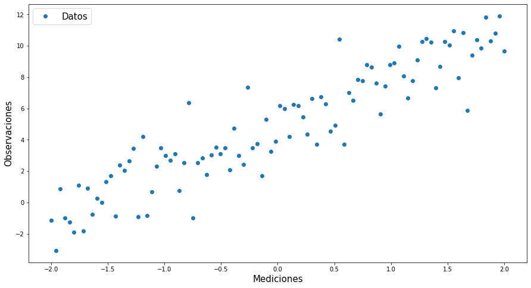
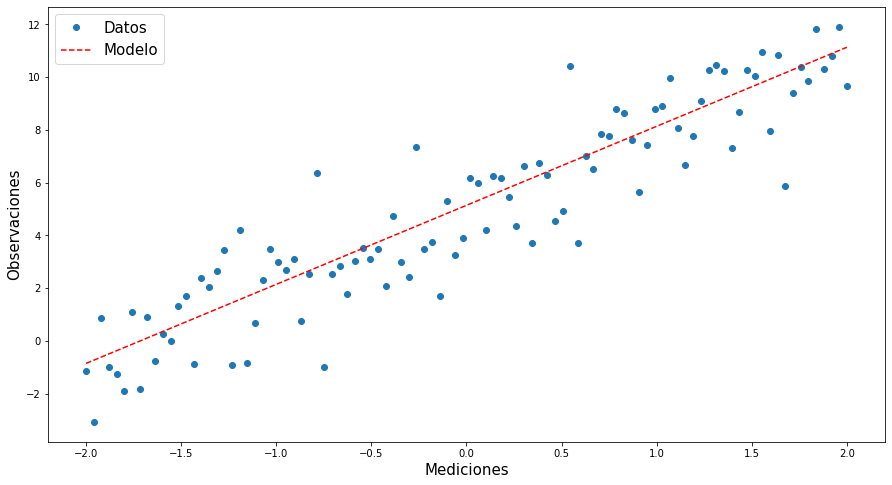
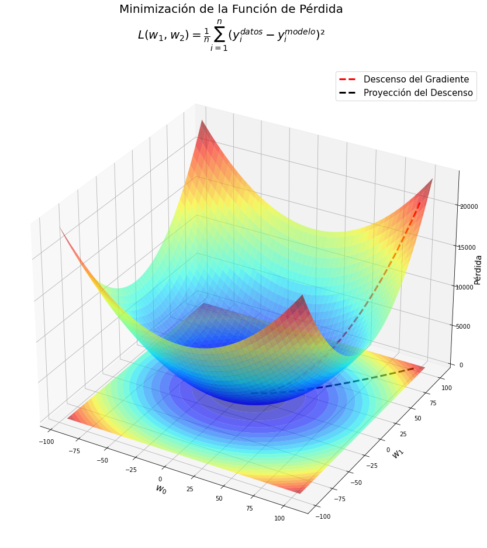
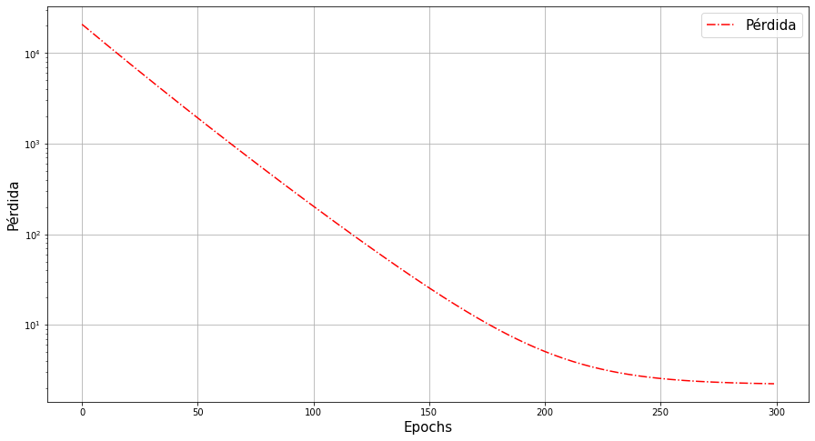

Optimización multivariada usando JAX
Contents
Optimización multivariada usando JAX #
Introducción#
En este ejercicio generamos un conjunto de datos que sigue un modelo lineal, pasando por el origen. Lo datos son contaminado con un error normal \(N(0,2^2)\).
Carga módulos#
from __future__ import print_function
import jax.numpy as np # autograd para windows
import numpy as onp
import matplotlib.pyplot as plt
from jax import grad,jit
import pandas as pd
---------------------------------------------------------------------------
ModuleNotFoundError Traceback (most recent call last)
Input In [1], in <cell line: 2>()
1 from __future__ import print_function
----> 2 import jax.numpy as np # autograd para windows
3 import numpy as onp
4 import matplotlib.pyplot as plt
File ~\AppData\Local\Programs\Python\Python39\lib\site-packages\jax\__init__.py:21, in <module>
18 del _os
20 # flake8: noqa: F401
---> 21 from .config import config
22 from .api import (
23 ad, # TODO(phawkins): update users to avoid this.
24 argnums_partial, # TODO(phawkins): update Haiku to not use this.
(...)
87 xla_computation,
88 )
89 from .experimental.maps import soft_pmap
File ~\AppData\Local\Programs\Python\Python39\lib\site-packages\jax\config.py:19, in <module>
17 import threading
18 from typing import Optional
---> 19 from jax import lib
21 def bool_env(varname: str, default: bool) -> bool:
22 """Read an environment variable and interpret it as a boolean.
23
24 True values are (case insensitive): 'y', 'yes', 't', 'true', 'on', and '1';
(...)
30 Raises: ValueError if the environment variable is anything else.
31 """
File ~\AppData\Local\Programs\Python\Python39\lib\site-packages\jax\lib\__init__.py:23, in <module>
1 # Copyright 2018 Google LLC
2 #
3 # Licensed under the Apache License, Version 2.0 (the "License");
(...)
15 # This module is largely a wrapper around `jaxlib` that performs version
16 # checking on import.
18 __all__ = [
19 'cuda_prng', 'cusolver', 'rocsolver', 'jaxlib', 'lapack',
20 'pocketfft', 'pytree', 'tpu_client', 'version', 'xla_client'
21 ]
---> 23 import jaxlib
25 # Must be kept in sync with the jaxlib version in build/test-requirements.txt
26 _minimum_jaxlib_version = (0, 1, 60)
ModuleNotFoundError: No module named 'jaxlib'
Genera y grafica datos simulados#
# Simulación de datos
# Elegir una semilla
onp.random.seed(22)
# Generación de los datos
x=onp.linspace(-2,2,100)
y=3*x+5*(onp.random.normal(1,0.3,len(x)))
#Print Results
#print("x:\n",x,"\n")
#print("y:\n",y)
data=pd.DataFrame({"Mediciones":x,"Observaciones":y})
data
| Mediciones | Observaciones | |
|---|---|---|
| 0 | -2.000000 | -1.137925 |
| 1 | -1.959596 | -3.073814 |
| 2 | -1.919192 | 0.865112 |
| 3 | -1.878788 | -0.995351 |
| 4 | -1.838384 | -1.251845 |
| ... | ... | ... |
| 95 | 1.838384 | 11.819169 |
| 96 | 1.878788 | 10.311217 |
| 97 | 1.919192 | 10.783253 |
| 98 | 1.959596 | 11.913358 |
| 99 | 2.000000 | 9.675285 |
100 rows × 2 columns
plt.figure(figsize=(15,8))
plt.plot(x,y,'o')
plt.xlabel("Mediciones",fontsize=15)
plt.ylabel("Observaciones",fontsize=15)
plt.legend(["Datos"],fontsize=15)
plt.show()

Función de pérdida#
def loss(β0,β1,x,y):
return ((y-(β1*x+β0))**2).mean()
## Diferenciación Automática
grad_loss=jit(grad(loss,argnums=(0,1)))
Gradiente descendiente #
def optimize(β0,β1,x,y,h=1.5):
# Calcular Derivada
β0_grad,β1_grad=grad_loss(β0,β1,x,y)
# Gradiente Descendiente
β1-=β1_grad*h
β0-=β0_grad*h
# Regresar Nuevos parámetros
return β0,β1
Optimización#
## Estimación inicial
Β0,Β1=100.,100.
# Acumular resultados
β0,β1=[],[]
train_loss=[]
# Número de veces que se cambiar los parámetros
epochs=300
# Tasa de Aprendizaje
lr=0.01
print("Perdidas:\n")
for epoch in range(epochs):
Β0,Β1=optimize(Β0,Β1,x,y,lr)
β0.append(Β0)
β1.append(Β1)
losss=loss(Β0,Β1,x,y)
train_loss.append(losss)
if epoch%10==0:
print(f"Iteración {epoch}: {losss}")
Perdidas:
Iteración 0: 20803.392578125
Iteración 10: 12779.0595703125
Iteración 20: 7892.66162109375
Iteración 30: 4901.59716796875
Iteración 40: 3060.91064453125
Iteración 50: 1922.00927734375
Iteración 60: 1213.4840087890625
Iteración 70: 770.31201171875
Iteración 80: 491.6375427246094
Iteración 90: 315.49407958984375
Iteración 100: 203.60276794433594
Iteración 110: 132.18850708007812
Iteración 120: 86.40409088134766
Iteración 130: 56.92799758911133
Iteración 140: 37.87733459472656
Iteración 150: 25.52058982849121
Iteración 160: 17.47943115234375
Iteración 170: 12.231060981750488
Iteración 180: 8.796314239501953
Iteración 190: 6.5430588722229
Iteración 200: 5.061695098876953
Iteración 210: 4.085933208465576
Iteración 220: 3.442112922668457
Iteración 230: 3.0166749954223633
Iteración 240: 2.735172748565674
Iteración 250: 2.5486931800842285
Iteración 260: 2.4250361919403076
Iteración 270: 2.342963457107544
Iteración 280: 2.2884490489959717
Iteración 290: 2.2522146701812744
Parámetros finales #
print(β1[-1])
print(β0[-1])
2.996511
5.1412616
# Haciendo el modelo
mod=β1[-1]*x+β0[-1]
plt.figure(figsize=(15,8))
plt.plot(x,y,'o')
plt.plot(x,mod,'r--')
plt.xlabel("Mediciones",fontsize=15)
plt.ylabel("Observaciones",fontsize=15)
plt.legend(["Datos","Modelo"],fontsize=15)
plt.show()

Visualizando la función pérdida #
# eje β (par.)
β0x=onp.linspace(β0[-1]-100,β0[-1]+100,100)
β1y=onp.linspace(β1[-1]-100,β1[-1]+100,100)
bx,by=onp.meshgrid(β0x,β1y)
l=onp.empty(shape=(len(β0x),len(β1y)))
for i in range(len(β0x)):
for j in range(len(β1y)):
l[i,j]=((by[i,j]*x+bx[i,j]-y)**2).mean()
#%matplotlib inline
from mpl_toolkits.mplot3d import Axes3D
fig = plt.figure(figsize=(22,15))
plt.suptitle("Minimización de la Función de Pérdida\n"+r"$L( w_{1}, w_{2})=\frac{1}{n}\sum_{i=1}^{n}(y_i^{datos}-y_i^{modelo})²$",fontsize=20)
ax = plt.axes(projection='3d')
ax.plot_surface(bx,by,l,alpha=0.6,cmap='jet') # Superficie de pérdida
ax.plot(β0,β1,train_loss,'r--',lw=3,label="Descenso del Gradiente") # Ruta tomada por el optimizador
ax.contourf(bx,by,l,25,offset=-1,cmap='jet',alpha=0.6,antialiased=True) # Curvas de nivel de superficie
ax.plot(β0,β1,'k--',lw=3,label="Proyección del Descenso") # Proyección de la ruta
ax.set_xlabel(r"$w_0$",fontsize=15)
ax.set_ylabel(r"$w_1$",fontsize=15)
#ax.zaxis.set_rotate_label(False) # deshabilitar la rotación automática
ax.set_zlabel("Pérdida",fontsize=14,rotation=90)
#ax.view_init(30, 100)
plt.legend(fontsize=15)
#plt.savefig('GD_3D.png')
plt.show()

from mpl_toolkits.mplot3d import Axes3D
fig = plt.figure(figsize=(22,15))
plt.suptitle("Minimización de la Función de Pérdida\n"+r"$L( w_{1}, w_{2})=\frac{1}{n}\sum_{i=1}^{n}(y_i^{datos}-y_i^{modelo})²$",fontsize=20)
ax = plt.axes(projection='3d')
ax.plot_surface(bx,by,l,alpha=0.6,cmap='jet') # Superficie de pérdida
ax.plot(β0,β1,train_loss,'r--',lw=3,label="Descenso del Gradiente") # Ruta tomada por el optimizador
ax.contourf(bx,by,l,25,offset=-1,cmap='jet',alpha=0.6,antialiased=True) # Curvas de nivel de superficie
ax.plot(β0,β1,'k--',lw=3,label="Proyección del Descenso") # Proyección de la ruta
ax.set_xlabel(r"$w_0$",fontsize=15)
ax.set_ylabel(r"$w_1$",fontsize=15)
#ax.zaxis.set_rotate_label(False) # deshabilitar la rotación automática
ax.set_zlabel("Pérdida",fontsize=14,rotation=90)
#ax.view_init(30, 100)
plt.legend(fontsize=15)
#plt.savefig('GD_3D.png')
plt.show()
%matplotlib inline
plt.figure(figsize=(15,8))
plt.semilogy(range(epochs),train_loss,'r-.')
plt.xlabel("Epochs",fontsize=15)
plt.ylabel("Pérdida",fontsize=15)
plt.legend(["Pérdida"],fontsize=15)
plt.grid()
plt.show()
